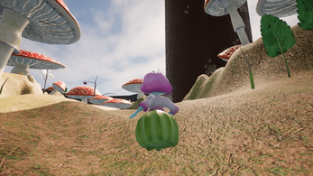
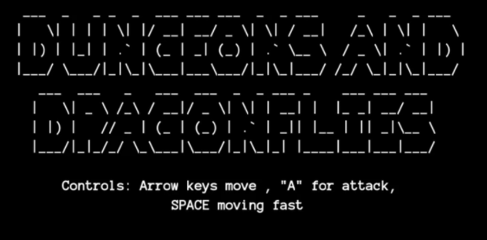

GAMES
Factory Reset
Factory Reset is a 3D single player first-person puzzle and traversal game about a magnetic robot named FyED-OR navigating their way through a Soviet-inspired cyberpunk world. The player uses their magnetic feet and hands to traverse a sequence of three different level environments and solve tricky puzzles along the way.
I created systems that allowed the player to interact with various gameplay elements, over 10 different accessibility features, and a majority of the audio in the game. Factory Reset won the Provost Award at WPI for the best capstone project in the discipline of IMGD.
- Team Size: 4 people
- My Role: Gameplay Programmer | Lead Audio Engineer
- Timeline: August 2020 - May 2021
- Tools: Unity Engine, C#, Reaper, Git
- Source Code

- Final Report
Blossom
Blossom is a 3D,single player third-person platformer where you play as a small flower person swinging around lush organic environments and collecting "dawndrops" to revive a sacred flower. For this game I implemented the main swinging mechanic, produced the music, and created some of the particle effects.
- Team Size: 6 people
- My Role: Gameplay Programmer | Composer | VFX Artist
- Timeline: March 2020 - May 2020
- Tools: Unreal Engine, C++, Reaper, Perforce
Dungeons and Dragonflies
Dungeons and Dragonflies is a 2D single player dungeon crawler where the player makes their way through randomly generated dungeons looking for food and avoiding monsters. The game was created in the Dragonfly engine, which I implemented as part of the class IMGD 3000: Technical Game Development. For this game, I implemented the random dungeon generation and created the music.
- Team Size: 2 people
- My Role: Lead Gameplay Programmer | Composer
- Timeline: December 2019
- Tools: Dragonfly, C++, PxTone Collage, Git
- Source Code